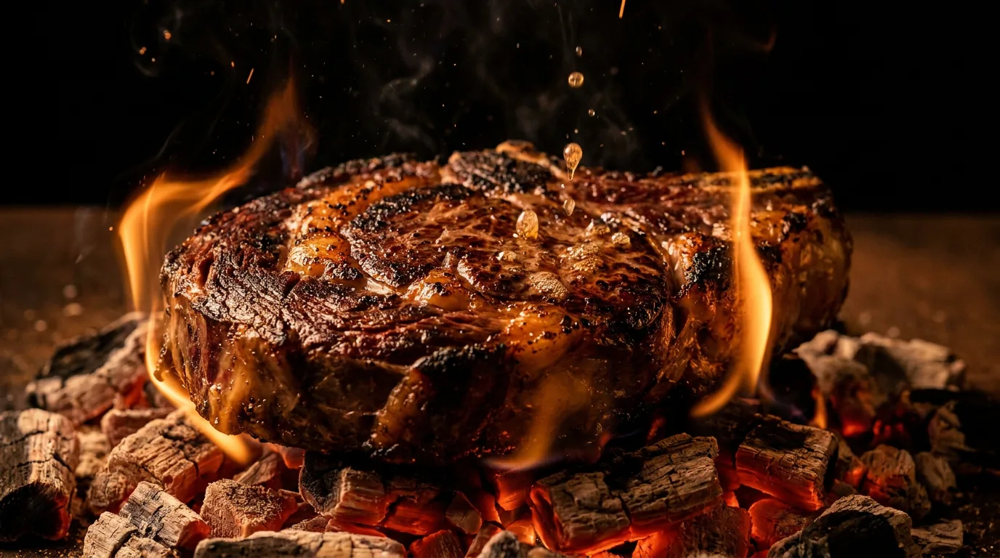

Der Raum
Sechs Gerichte.
Sechs Gerichte.
Ein Feuer.
Röstung auf der Kruste. Rauch im Gebälk.
Sie hören Ihr Essen, bevor Sie es sehen.
EMBER & OAK · WIEN · MMXXVI
0 / 100
Wien · Holzfeuer-Steakhouse
Tisch reservieren↗
Gegr. Wien · MMXXVI
Holzfeuer. Sonst nichts.
Eiche, Asche
und Geduld.
Das Feuer brennt.
Scrollen — der Tisch wartetRöstung auf der Kruste. Rauch im Gebälk.
Sie hören Ihr Essen, bevor Sie es sehen.
EMBER & OAK · WIEN · MMXXVI
Die Tische sind wenige. Das Feuer ist geduldig — der Raum nicht.